ECDF & Distribution Comparison
Master Empirical Cumulative Distribution Functions: Parameter-Free Step Functions, Threshold Probability Auditing, Stochastic Dominance, and Multi-Group Comparisons with sns.ecdfplot()
📈 01. What is an ECDF? (Empirical Cumulative Distribution Function)
Sochiye aapke college me ek tough programming exam conduct hua jisme 100 students baithe the. Professor aapse poochte hain:
"Kitne percent students ne apna paper 60 minutes ke andar complete karke submit kar diya?"
Agar aap sirf Average (Mean) nikalte hain (e.g. Mean time = 58 minutes), toh aap professor ke question ka answer nahi de sakte! Average yeh nahi batata ki kitne percent log time limit ke andar the. Aur agar aap Histogram banate hain, toh bins ke cutoffs (e.g. 50-59 mins, 60-69 mins) exact 60-minute cutoff par split ho jaate hain. Yahan hume zaroorat padti hai ECDF (Empirical Cumulative Distribution Function) ki!
ECDF ek statistical visualization hai jo data ke har unique value par yeh measure karta hai ki kitne proportion (ya percentage) observations us value ke barabar ya us se chote (less than or equal to, ≤ x) hain:
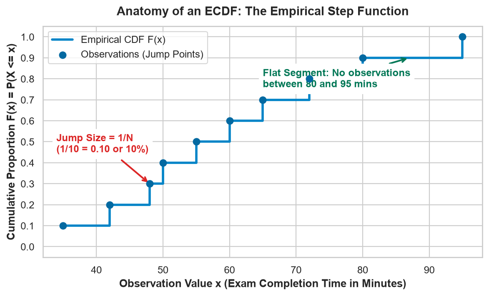
Why is ECDF Called "Parameter-Free"? (The Ultimate Superpower)
Topic 5 me humne dekha tha ki:
- Histogram me aapko
binsyabinwidthchoose karni padti hai. Galat bin number choose karne se distribution distort ho jati hai. - KDE plot me aapko
bw_adjust(smoothing bandwidth) tune karni padti hai. Galat bandwidth se bimodal peaks merge ho jaate hain. - ECDF me ZERO parameters tune karne hote hain! Yeh raw data ke har single observation ko directly step format me plot karta hai bina kisi assumption ya smoothing ke.
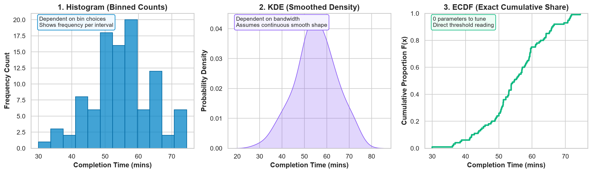
- X-axis: Observation value x (jaise Exam Completion Time in minutes, Order Delivery Time, ya Website Latency in ms).
- Y-axis: Cumulative Proportion F(x) = P(X ≤ x), jo strictly 0.0 (0%) se start hokar 1.0 (100%) tak monotonically increase hota hai. ECDF curve kabhi neeche nahi girti!
🔢 02. Understanding Cumulative Probability & Step Function Math
Aaiye ECDF ki internal mathematics ko ground-up samajhte hain. Maan lijiye 10 students ke exam submission times (minutes) yeh hain:
exam_times = [35, 42, 48, 50, 55, 60, 65, 72, 80, 95]The 4-Step Mathematical Recipe to Build an ECDF
- Sort the observations in ascending order: x(1) ≤ x(2) ≤ … ≤ x(N).
- Assign ranks: Har observation ko index i (1, 2, …, N) assign karein.
- Compute cumulative fraction: Har value x(i) ke liye formula apply karein:
F(x) = (Observations ≤ x) / N = i / N - Plot as a Step Function: Points ko horizontal flats aur vertical jumps (1/N = 1/10 = 0.10) ke through connect karein.
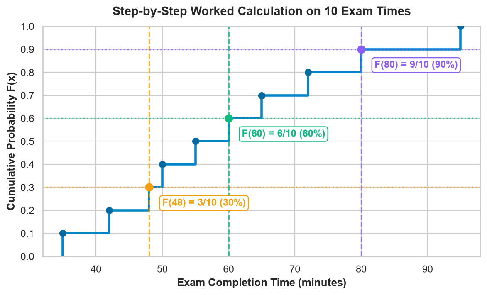
Worked Step-by-Step Numerical Verification Table
| Rank (i) | Time (mins, x) | Students Finished (≤ x) | Cumulative Proportion F(x) | Cumulative Percentage (%) |
|---|---|---|---|---|
| 1 | 35 | 1 | 1 / 10 = 0.10 | 10% |
| 2 | 42 | 2 | 2 / 10 = 0.20 | 20% |
| 3 | 48 | 3 | 3 / 10 = 0.30 | 30% (F(48) = 0.30) |
| 4 | 50 | 4 | 4 / 10 = 0.40 | 40% |
| 5 | 55 | 5 | 5 / 10 = 0.50 | 50% (Median = 55m) |
| 6 | 60 | 6 | 6 / 10 = 0.60 | 60% (F(60) = 0.60) |
| 7 | 65 | 7 | 7 / 10 = 0.70 | 70% |
| 8 | 72 | 8 | 8 / 10 = 0.80 | 80% |
| 9 | 80 | 9 | 9 / 10 = 0.90 | 90% (F(80) = 0.90) |
| 10 | 95 | 10 | 10 / 10 = 1.00 | 100% (All Finished) |
Jab tak koi naya student paper submit nahi karta, cumulative count change nahi hoti (horizontal flat line). Jaise hi koi student submit karta hai, cumulative count instantly 1 se jump karti hai (vertical step jump of size 1/N). Continuous smooth curve draw karna empirical data par mathematically inaccurate hota hai kyunki observations discrete events hoti hain!
🚀 03. Your First ECDF with sns.ecdfplot()
Seaborn 0.11+ me introduce kiya gaya sns.ecdfplot() standalone empirical cumulative distribution plot create karne ka primary axes-level function hai. Aaiye iske core parameters ko samajhte hain:
| Parameter | Type & Default | Functional Purpose | Common Production Usage |
|---|---|---|---|
data |
DataFrame / Array |
Input dataset containing variables. | data=df_exam |
x |
str / Series |
Column name for horizontal evaluation (independent variable). | x="completion_time" |
y |
str / Series |
Column name for vertical evaluation (if plotting inverted ECDF). | Rarely used (default is horizontal x). |
hue |
str |
Categorical grouping variable for multi-line comparison. | hue="section" |
stat |
"proportion" | "percent" | "count" |
Statistic to compute on Y-axis. Default is "proportion" [0.0 to 1.0]. |
stat="percent" [0 to 100%] |
complementary |
bool = False |
If True, plots Complementary CDF: 1 - F(x) = P(X > x). |
complementary=True (SLA Violations) |
log_scale |
bool | number |
Applies logarithmic transformation to axis. | log_scale=True for long latency tails |
weights |
array-like |
Weight of each observation for non-uniform sampling. | Survey demographic weighting |
ax |
matplotlib.axes.Axes |
Target subplot axes object. | ax=axes[0] |
Example 1: College Exam Completion Time (100 Students)
Aaiye 100 students ke exam submission times par ECDF plot create karein aur 60-minute threshold evaluate karein:
import seaborn as sns
import matplotlib.pyplot as plt
import pandas as pd
df_sections = pd.read_csv("scratch/seaborn_topic6_data/college_exam_sections.csv")
sec_a = df_sections[df_sections["section"] == "Section A"]
sns.set_theme(style="whitegrid")
fig, ax = plt.subplots(figsize=(8, 4.2), dpi=140)
# Plot Empirical CDF
sns.ecdfplot(data=sec_a, x="completion_time", color="#4f46e5", linewidth=2.5, ax=ax)
# Annotate 60-minute cutoff
ax.axvline(60, color="#dc2626", linestyle="--", linewidth=1.8, label="60-Min Limit")
ax.axhline(0.75, color="#10b981", linestyle="--", linewidth=1.8, label="75% Finished")
ax.plot(60, 0.75, marker="o", markersize=8, color="#dc2626")
ax.set_title("College Exam Completion Time ECDF (Section A: 100 Students)", fontweight="bold")
ax.set_xlabel("Exam Completion Time (Minutes)")
ax.set_ylabel("Proportion of Students Finished F(x)")
ax.legend(loc="upper left")
plt.tight_layout()
plt.show()
print("Proportion <= 60 mins:", (sec_a["completion_time"] <= 60).mean())
print("Proportion <= 75 mins:", (sec_a["completion_time"] <= 75).mean())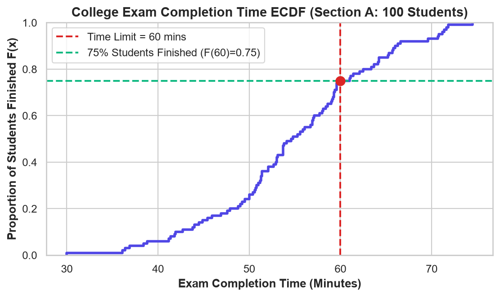
Example 2: Online Retail Delivery Times (QuickDrop: 100 Orders)
Agar business stakeholder percentages dekhna chahta hai, toh stat="percent" pass karein taaki Y-axis 0% se 100% format me display ho:
df_delivery = pd.read_csv("scratch/seaborn_topic6_data/ecommerce_deliveries.csv")
quick_deliv = df_delivery[df_delivery["partner"] == "QuickDrop"]
fig, ax = plt.subplots(figsize=(8, 4.2), dpi=140)
sns.ecdfplot(data=quick_deliv, x="delivery_time_mins", stat="percent", color="#0284c7", linewidth=2.5, ax=ax)
ax.set_title("Online Retail Delivery Time ECDF (QuickDrop: 100 Orders)", fontweight="bold")
ax.set_xlabel("Delivery Time (Minutes)")
ax.set_ylabel("Cumulative Percentage of Orders Delivered (%)")
plt.tight_layout()
plt.show()
print("Delivered <= 30 mins:", f"{(quick_deliv['delivery_time_mins'] <= 30).mean() * 100:.1f}%")
print("Delivered <= 45 mins:", f"{(quick_deliv['delivery_time_mins'] <= 45).mean() * 100:.1f}%")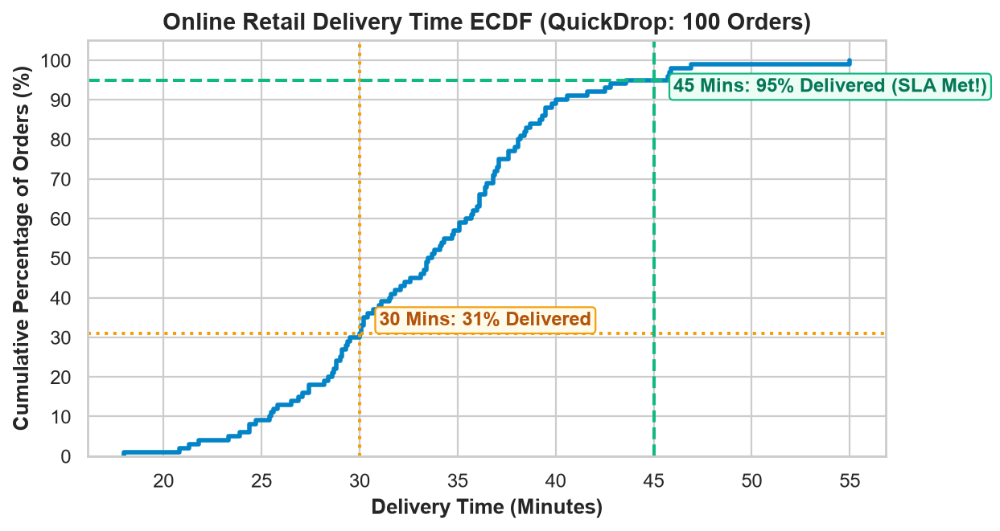
stat="percent" — Showing 31% delivered within 30 minutes, and 95% delivered within the 45-minute SLA target.🎨 04. Customizing Aesthetics & Threshold Annotations
Raw plots students aur management dono ke liye boring hote hain. Ek presentation-grade ECDF banane ke liye hume:
- Target compliance region ko
ax.axvspan()se light green shade karna chahiye. - Critical business cutoffs par
ax.axvline()aurax.axhline()reference lines lagani chahiye. - Direct text callout box ke zariye actionable conclusion highlight karna chahiye.
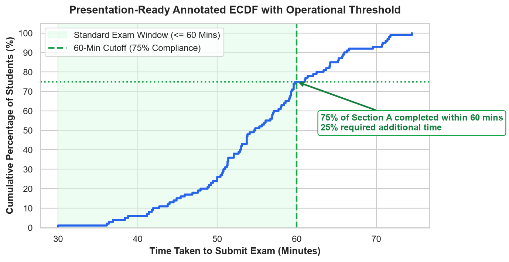
fig, ax = plt.subplots(figsize=(8.5, 4.5), dpi=140)
sns.ecdfplot(data=sec_a, x="completion_time", stat="percent", color="#2563eb", linewidth=2.5, ax=ax)
# Highlight compliance window
ax.axvspan(30, 60, color="#dcfce7", alpha=0.5, label="Standard Window (<= 60 Mins)")
ax.axvline(60, color="#16a34a", linestyle="--", linewidth=2, label="60-Min Cutoff (75% Compliance)")
ax.axhline(75, color="#16a34a", linestyle=":", linewidth=1.8)
ax.annotate(
"75% of Section A completed within 60 mins\n25% required additional time",
xy=(60, 75), xytext=(63, 50),
arrowprops=dict(arrowstyle="->", color="#15803d", lw=2),
fontweight="bold", color="#15803d", bbox=dict(boxstyle="round,pad=0.3", fc="#ffffff", ec="#16a34a")
)
ax.set_title("Presentation-Ready Annotated ECDF with Operational Threshold", pad=12, fontweight="bold")
ax.set_xlabel("Time Taken to Submit Exam (Minutes)")
ax.set_ylabel("Cumulative Percentage of Students (%)")
ax.legend(loc="upper left")
plt.tight_layout()
plt.show()🖈 05. Operational SLA Targets & Multi-Service Compliance
Real-world operations me companies Service Level Agreements (SLAs) sign karti hain. Example: "90% of all customer orders must be delivered within 45 minutes."
Aaiye 3 alag-alag logistics partners (QuickDrop, SpeedyKart, HyperRoute) ko same chart par ECDF ke through evaluate karein:
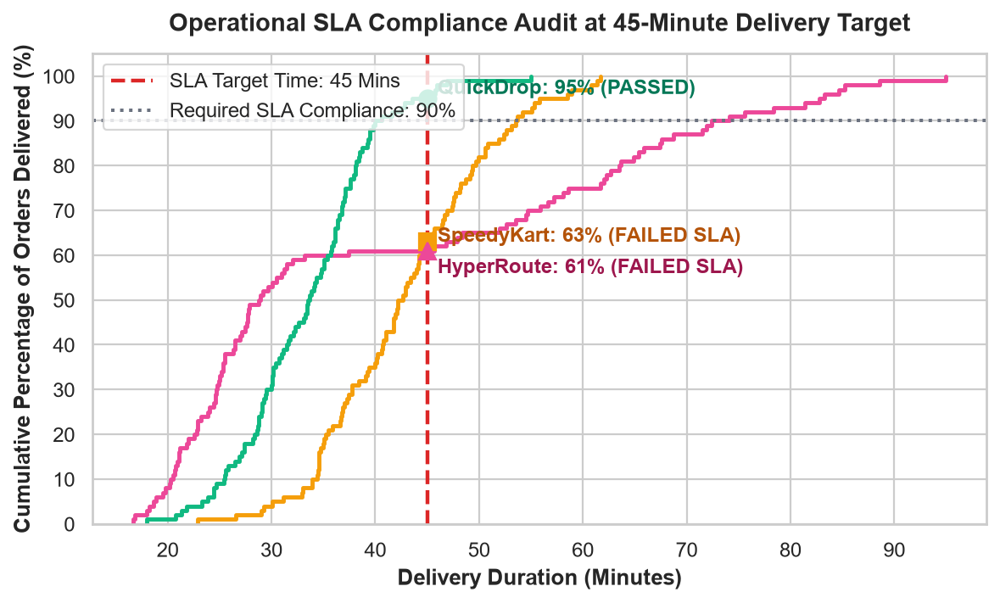
fig, ax = plt.subplots(figsize=(8.5, 4.5), dpi=140)
sns.ecdfplot(
data=df_delivery, x="delivery_time_mins", hue="partner", stat="percent",
palette={"QuickDrop": "#10b981", "SpeedyKart": "#f59e0b", "HyperRoute": "#ec4899"},
linewidth=2.2, ax=ax
)
# 45-min deadline and 90% SLA requirement
ax.axvline(45, color="#dc2626", linestyle="--", linewidth=2, label="SLA Target: 45 Mins")
ax.axhline(90, color="#6b7280", linestyle=":", linewidth=1.8, label="Required Benchmark: 90%")
ax.set_title("Operational SLA Compliance Audit at 45-Minute Delivery Target", fontweight="bold")
ax.set_xlabel("Delivery Duration (Minutes)")
ax.set_ylabel("Orders Delivered (%)")
ax.legend(loc="upper left")
plt.tight_layout()
plt.show()
for partner in ["QuickDrop", "SpeedyKart", "HyperRoute"]:
sub = df_delivery[df_delivery["partner"] == partner]
pct = (sub["delivery_time_mins"] <= 45).mean() * 100
print(f"{partner} 45-Min Compliance: {pct:.1f}% -> {'PASS' if pct >= 90 else 'FAIL'}")🔄 06. Comparing Distributions: Beyond Single Summary Averages
Data science me sabse bada trap hota hai The Flaw of Averages. Agar do groups ka average (mean) ek jaisa ho, toh log maan lete hain ki dono groups identical perform kar rahe hain. Lekin ground reality me unka distribution completely different ho sakta hai!
Maan lijiye do hospital emergency rooms (ER-1 aur ER-2) ka average patient waiting time 45 minutes hai:
- ER-1: Sabhi patients ka waiting time 40 se 50 minutes ke beech hota hai (Consistent & predictable).
- ER-2: 50% patients 5 minutes me check ho jaate hain, lekin baaki 50% critical patients 85 minutes tak tadap rahe hote hain!
Average dono ka 45 mins hai, lekin ER-2 me 50% log dangerously delayed hain! ECDF is extreme spread ko instant reveal karta hai.
First-Order Stochastic Dominance (Kiska Curve Aage Hai?)
Jab hum do ECDFs ko compare karte hain, toh curve jo LEFT aur UPWARD hoti hai, woh faster / smaller values represent karti hai. Aaiye Section A aur Section B ke exam submission times ko compare karein:
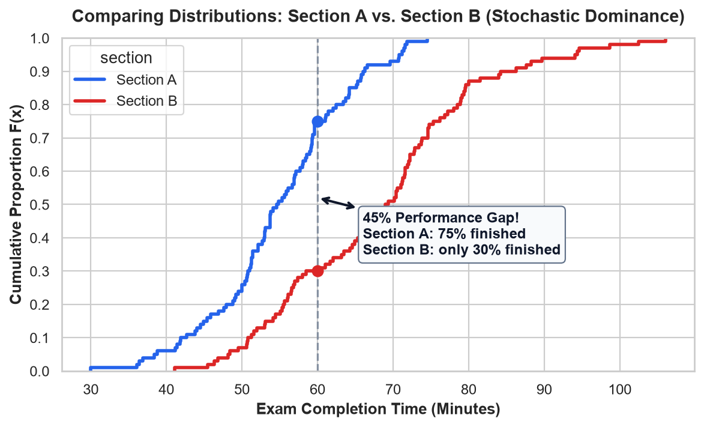
fig, ax = plt.subplots(figsize=(8.5, 4.5), dpi=140)
sns.ecdfplot(
data=df_sections, x="completion_time", hue="section",
palette={"Section A": "#2563eb", "Section B": "#dc2626"},
linewidth=2.5, ax=ax
)
# Highlight the 60-minute gap
ax.axvline(60, color="#64748b", linestyle="--", alpha=0.7)
ax.plot(60, 0.75, marker="o", markersize=8, color="#2563eb")
ax.plot(60, 0.30, marker="o", markersize=8, color="#dc2626")
ax.set_title("Comparing Distributions: Section A vs. Section B (Stochastic Dominance)", fontweight="bold")
ax.set_xlabel("Exam Completion Time (Minutes)")
ax.set_ylabel("Cumulative Proportion F(x)")
plt.tight_layout()
plt.show()
print("Section A <= 60 mins:", f"{(sec_a['completion_time'] <= 60).mean()*100:.1f}%")
sec_b = df_sections[df_sections["section"] == "Section B"]
print("Section B <= 60 mins:", f"{(sec_b['completion_time'] <= 60).mean()*100:.1f}%")- Agar x-axis "Cost", "Latency" ya "Time" hai (where smaller is better): Toh jo curve Left & Upward hogi woh better perform kar rahi hai.
- Agar x-axis "Exam Marks", "Income" ya "Battery Life" hai (where bigger is better): Toh jo curve Right & Downward hogi woh better perform kar rahi hai (higher scores).
⚖ 07. Head-to-Head Service Comparisons & Median Spreads
Business me jab do vendors ya delivery partners compete karte hain, toh hume unke Median (50th percentile) aur unke Spread (Interquartile Range) ko evaluate karna hota hai:
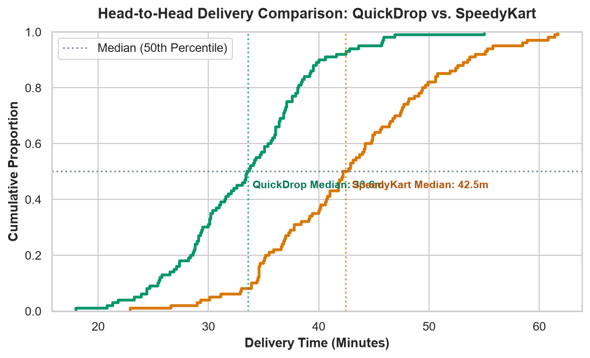
df_two = df_delivery[df_delivery["partner"].isin(["QuickDrop", "SpeedyKart"])]
fig, ax = plt.subplots(figsize=(8.5, 4.5), dpi=140)
sns.ecdfplot(
data=df_two, x="delivery_time_mins", hue="partner",
palette={"QuickDrop": "#059669", "SpeedyKart": "#d97706"},
linewidth=2.5, ax=ax
)
# Draw Median Reference Lines (F(x) = 0.50)
ax.axhline(0.50, color="#64748b", linestyle=":", alpha=0.8, label="Median (50th Percentile)")
ax.axvline(33.6, color="#059669", linestyle=":", alpha=0.8)
ax.axvline(42.45, color="#d97706", linestyle=":", alpha=0.8)
ax.set_title("Head-to-Head Delivery Comparison: QuickDrop vs. SpeedyKart", fontweight="bold")
ax.set_xlabel("Delivery Time (Minutes)")
ax.set_ylabel("Cumulative Proportion")
ax.legend(loc="upper left")
plt.tight_layout()
plt.show()
print("QuickDrop Median:", df_two[df_two["partner"]=="QuickDrop"]["delivery_time_mins"].median(), "mins")
print("SpeedyKart Median:", df_two[df_two["partner"]=="SpeedyKart"]["delivery_time_mins"].median(), "mins")🖌 08. Multi-Group Visualizations with hue & Color Palettes
Jab 3 ya 4 groups hon, toh hue parameter ke sath distinct, accessible colors use karna essential hota hai. Unlike histograms (jahan multiple groups ke bars ek doosre ko block kar dete hain), ECDF me sabhi curves clean lines ke roop me draw hoti hain jisse koi bar occlusion nahi hota:
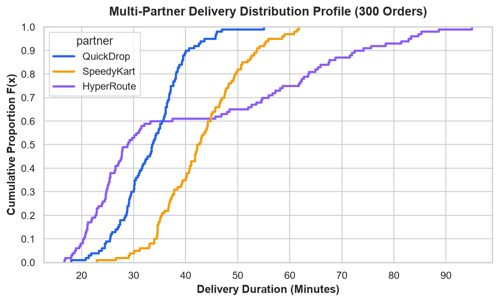
partner_palette = {
"QuickDrop": "#2563eb", # Vibrant Blue
"SpeedyKart": "#f59e0b", # Amber Orange
"HyperRoute": "#8b5cf6" # Royal Purple
}
fig, ax = plt.subplots(figsize=(8.5, 4.5), dpi=140)
sns.ecdfplot(
data=df_delivery, x="delivery_time_mins", hue="partner",
palette=partner_palette, linewidth=2.3, ax=ax
)
ax.set_title("Multi-Partner Delivery Distribution Profile (300 Orders)", fontweight="bold")
ax.set_xlabel("Delivery Duration (Minutes)")
ax.set_ylabel("Cumulative Proportion F(x)")
plt.tight_layout()
plt.show()- Max 4–5 Curves: 5 se zyada groups hone par lines aapas me tangled pasta jaisi ban sakti hain.
- Explicit Palette Mapping: Hamesha categorical dictionary pass karein taaki har run par colors consistent rahein.
- Descriptive Legend: Seaborn automatically clean legend generate karta hai jo figure ke upper-left ya outside placement par crisp rehta hai.
⚖ 09. Tri-Plot Showdown: Histogram vs. KDE vs. ECDF
Distribution visualization ke 3 sabse prominent methods hain: Histogram, KDE Plot, aur ECDF Plot. Har tool ka apna unique purpose, mathematical assumption, aur limitation hota hai:
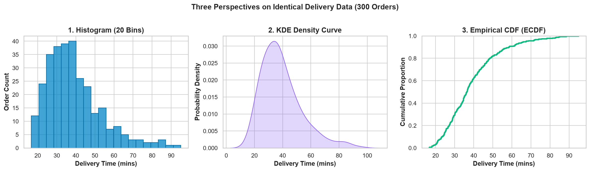
Comprehensive Comparison Matrix
| Feature / Dimension | Histogram (histplot) |
KDE Plot (kdeplot) |
ECDF Plot (ecdfplot) |
|---|---|---|---|
| Primary Purpose | Specific bins me observations ki frequency count dekhna. | Continuous probability density shape aur multiple peaks estimate karna. | Exact cumulative fraction (percentile) aur threshold compliance measure karna. |
| Parameter Sensitivity | High (Appearance changes with bins and binwidth). |
High (Curve changes with bw_adjust and clip). |
ZERO! (Parameter-free, exact direct empirical step function). |
| Data Loss / Smoothing | Discretizes continuous data into arbitrary bins. | Smooths over local spikes, can create boundary spillover. | Zero smoothing! 100% data points directly represented. |
| Multi-Group Overlap | Poor (Bars overlap or occlude unless dodged). | Good (Translucent curves allow comparison of 2–3 groups). | Excellent! (Non-overlapping lines cleanly compare 3–5 groups). |
| Threshold Reading | Difficult (Bins don't align with exact cutoffs). | Requires complex numerical integration under curve. | Instantaneous! Simply read Y-value at chosen X. |
| Bimodal Peak Detection | Very Clear (Two tall bar clusters visible). | Very Clear (Two distinct peaks in density). | Subtle (Visible as an inflection point or S-curve shift, but less intuitive). |
- Choose Histogram: Jab aapko discrete count numbers dekhne hon ("50 se 60 ke beech kitne orders the?").
- Choose KDE: Jab aapko distribution ki smooth multi-peak shape dekhni ho ("Kahan par clusters concentrate ho rahe hain?").
- Choose ECDF: Jab aapko threshold decisions lene hon ("Kitne % orders 45 mins ke andar delivered hue?") ya multiple services ko objectively compare karna ho.
❌ 10. The Crossover Phenomenon: When ECDF Curves Intersect
Real-world distributions me aksar ECDF curves aapas me cross karti hain. Crossover ka matlab hota hai ki ek service fast delivery me aage hai lekin reliability me piche hai! Yeh business analytics ka sabse illuminating insight hota hai:
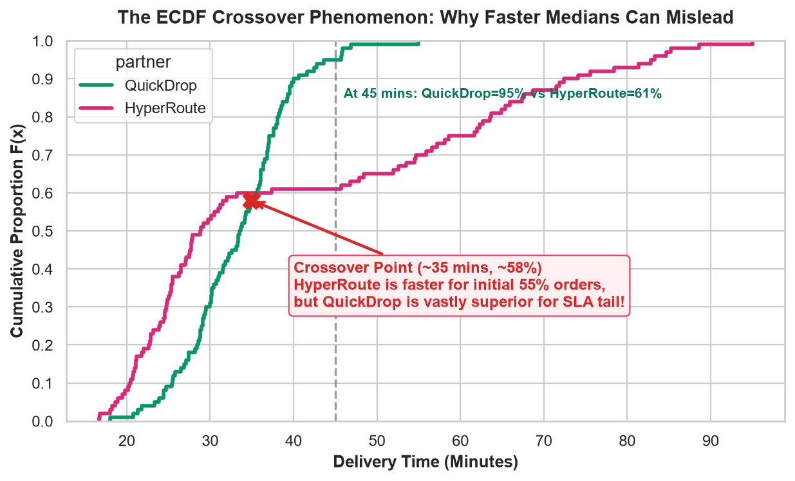
df_crossing = df_delivery[df_delivery["partner"].isin(["QuickDrop", "HyperRoute"])]
fig, ax = plt.subplots(figsize=(9, 4.8), dpi=140)
sns.ecdfplot(
data=df_crossing, x="delivery_time_mins", hue="partner",
palette={"QuickDrop": "#059669", "HyperRoute": "#db2777"},
linewidth=2.5, ax=ax
)
# Highlight the Crossover at ~35 mins
ax.plot(35, 0.58, marker="X", markersize=12, color="#dc2626", zorder=6)
ax.axvline(45, color="#6b7280", linestyle="--", linewidth=1.5, alpha=0.7)
ax.set_title("The ECDF Crossover Phenomenon: Why Faster Medians Can Mislead", fontweight="bold")
ax.set_xlabel("Delivery Time (Minutes)")
ax.set_ylabel("Cumulative Proportion F(x)")
plt.tight_layout()
plt.show()
print("HyperRoute Median:", df_delivery[df_delivery["partner"]=="HyperRoute"]["delivery_time_mins"].median(), "mins")
print("QuickDrop Median:", df_delivery[df_delivery["partner"]=="QuickDrop"]["delivery_time_mins"].median(), "mins")Agar aap marketing me sirf Median advertise karein, toh HyperRoute jeet jayega (28.9 mins vs 33.6 mins). Lekin agar aap customer satisfaction ya SLA guarantee (45 mins) dekhenge, toh HyperRoute ke 39% orders late ho jaate hain, jabki QuickDrop ke sirf 5% orders late hote hain! Crossover ECDFs prove karte hain ki Median alone does not tell the whole story!
👁 11. Distribution Tails & Outlier Latency Audits
Distribution ka Right Tail (Y ≥ 0.80) batata hai ki worst-case scenarios me system kaisa behave karta hai. ECDF me tail behavior ko analyze karna bohot easy hota hai — curve kitni der baad 1.0 touch karti hai:
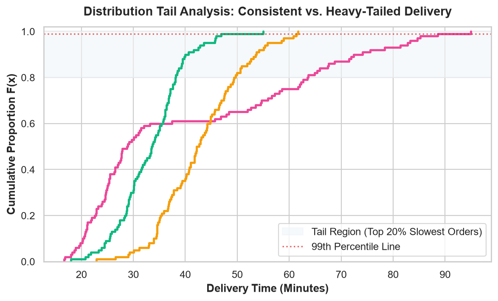
Thin Tail vs. Fat Tail (What it Means in Production)
- Thin Tail (Consistent Performance): Curve steeply rise hokar jaldi 1.0 par pahunch jaati hai. Outliers bohot kam hote hain. QuickDrop ka 99th percentile sirf 52 minutes hai.
- Fat / Heavy Tail (High Latency Variance): Curve upper region me flat ho kar bohot aage tak stretch hoti hai. Kuch unfortunate customers ko 80–95 minutes intezaar karna padta hai!
🔁 12. Regular CDF vs. Complementary CCDF (complementary=True)
Standard ECDF measure karta hai: P(X ≤ x) (kitne fraction ne time ke andar complete kiya). Lekin reliability engineering aur SLA breach audits me hume ulta poochhna hota hai: "Kitne fraction ne target se ZYADA time lagaya?" (Exceedance Probability).
Iske liye Seaborn me complementary=True use kiya jata hai, jise Complementary Cumulative Distribution Function (CCDF) ya Survival Function kehte hain:
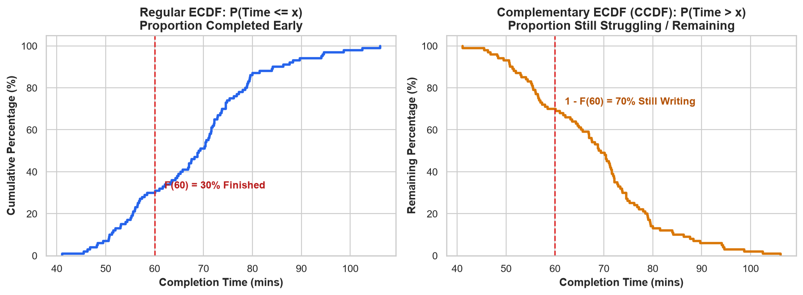
fig, axes = plt.subplots(1, 2, figsize=(12, 4.5), dpi=140)
sec_b_times = df_sections[df_sections["section"] == "Section B"]["completion_time"]
# 1. Standard CDF: P(Time <= x)
sns.ecdfplot(sec_b_times, stat="percent", color="#2563eb", linewidth=2.5, ax=axes[0])
axes[0].set_title("Standard ECDF: P(Time <= x)\nFinished Early", fontweight="bold")
axes[0].axvline(60, color="#dc2626", linestyle="--")
# 2. Complementary CCDF: P(Time > x)
sns.ecdfplot(sec_b_times, stat="percent", complementary=True, color="#d97706", linewidth=2.5, ax=axes[1])
axes[1].set_title("Complementary CCDF: P(Time > x)\nStill Writing / Overdue", fontweight="bold")
axes[1].axvline(60, color="#dc2626", linestyle="--")
plt.tight_layout()
plt.show()
print("Finished <= 60m:", f"{(sec_b_times <= 60).mean()*100:.1f}%")
print("Breached > 60m:", f"{(sec_b_times > 60).mean()*100:.1f}%")🔬 13. Sample Size Sensitivity: Staircase vs. Smooth Curves
Aksar students poochte hain: "Sir, mere graph me ECDF jagged staircase jaisa kyun dikh raha hai jabki tutorials me smooth curve jaisa dikhta hai?"
Iska direct answer hai: Sample Size (N). Har jump ki height 1/N hoti hai:
- Jab N = 15 ho, toh har step 1/15 ≈ 6.7% ka bada jump hota hai — staircase clearly nazar aati hai.
- Jab N = 500 ho, toh har step 1/500 = 0.2% ka tiny jump hota hai — curve visually continuous and smooth dikhne lagti hai!
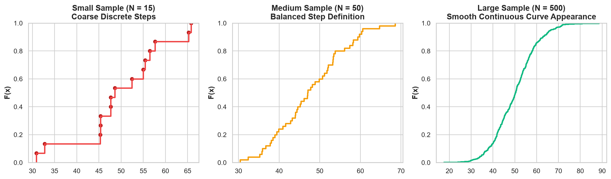
Bina kisi parameter ke, chote samples (N=15) par bhi ECDF 100% mathematically truthful hota hai! Yeh raw empirical data ko faithfully represent karta hai bina false smooth modes fabricate kiye.
🎓 14. Real-Life Case Study A: College Exam Section Performance
The Academic Problem: Ek engineering college ke HOD do faculty sections (Section A: 100 students vs Section B: 100 students) ke final programming exam submission times ko evaluate karna chahte hain. Unka question hai: "Kya Section A ke teaching methodology se students paper significantly jaldi aur accurately solve kar paaye?"
import seaborn as sns
import matplotlib.pyplot as plt
import pandas as pd
df_sections = pd.read_csv("scratch/seaborn_topic6_data/college_exam_sections.csv")
fig, ax = plt.subplots(figsize=(8.5, 4.5), dpi=140)
sns.ecdfplot(
data=df_sections, x="completion_time", hue="section",
palette={"Section A": "#2563eb", "Section B": "#dc2626"},
linewidth=2.5, ax=ax
)
# Threshold lines at 60 and 75 mins
ax.axvline(60, color="#64748b", linestyle="--", label="60-Min Standard Cutoff")
ax.axvline(75, color="#10b981", linestyle=":", label="75-Min Extended Cutoff")
ax.set_title("Case Study A: Exam Submission Speed by Section", fontweight="bold")
ax.set_xlabel("Exam Completion Time (Minutes)")
ax.set_ylabel("Cumulative Fraction Submitted F(x)")
ax.legend(loc="upper left")
plt.tight_layout()
plt.show()
for sec in ["Section A", "Section B"]:
sub = df_sections[df_sections["section"] == sec]
m = sub["completion_time"].mean()
med = sub["completion_time"].median()
p60 = (sub["completion_time"] <= 60).mean() * 100
p75 = (sub["completion_time"] <= 75).mean() * 100
print(f"{sec} -> Mean: {m:.1f}m, Median: {med:.1f}m | <=60m: {p60:.1f}%, <=75m: {p75:.1f}%")- Empirical Evidence: Section A demonstrates First-Order Stochastic Dominance over Section B. Section A ke 100% students 75 minutes me finish kar chuke the, jabki Section B ke 26% students ko 75 minutes se zyada time laga.
- Actionable Policy: Section A ke tutorial problem-solving structure ko Section B ke curriculum me implement kiya jaye taaki unki speed improve ho sake.
☁ 15. Real-Life Case Study B: Cloud Microservice Latency (v1 vs. v2)
The Cloud Engineering Problem: Ek tech company ne apna legacy monolithic payment API (API v1) rewrite karke modern microservice architecture (API v2) deploy kiya. Lead DevOps Architect ko prove karna hai ki naya service production SLA budget (100ms) meet kar raha hai aur tail latency eliminate ho chuki hai:
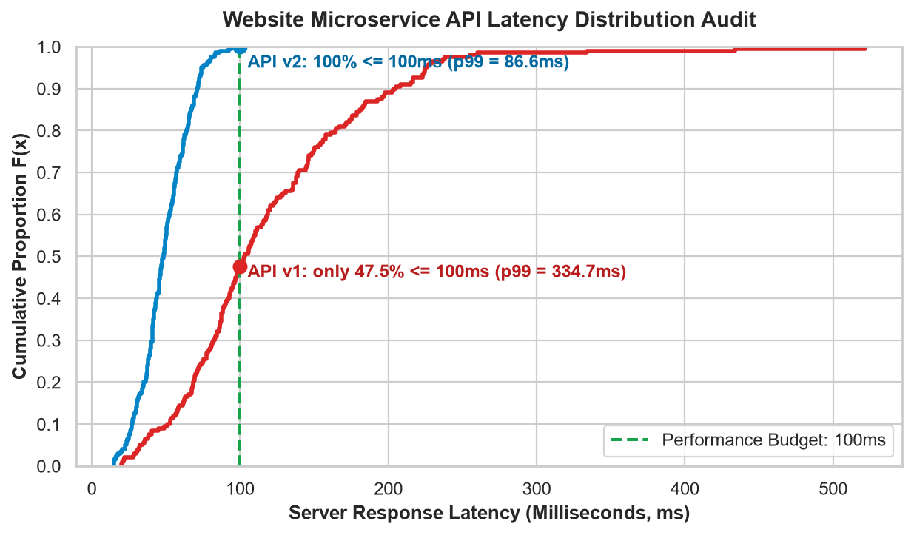
df_lat = pd.read_csv("scratch/seaborn_topic6_data/system_latencies.csv")
fig, ax = plt.subplots(figsize=(9, 4.6), dpi=140)
sns.ecdfplot(
data=df_lat, x="latency_ms", hue="service_version",
palette={"API v1 (Monolith)": "#dc2626", "API v2 (Microservice)": "#0284c7"},
linewidth=2.5, ax=ax
)
# 100ms Performance SLA Budget
ax.axvline(100, color="#16a34a", linestyle="--", linewidth=1.8, label="Performance Budget: 100ms")
ax.set_title("Website Microservice API Latency Distribution Audit", fontweight="bold")
ax.set_xlabel("Server Response Latency (Milliseconds, ms)")
ax.set_ylabel("Cumulative Fraction F(x)")
ax.legend(loc="lower right")
plt.tight_layout()
plt.show()
for ver in ["API v1 (Monolith)", "API v2 (Microservice)"]:
sub = df_lat[df_lat["service_version"] == ver]["latency_ms"]
print(f"--- {ver} ---")
print(f"p50 (Median): {sub.quantile(0.50):.1f} ms")
print(f"p95: {sub.quantile(0.95):.1f} ms")
print(f"p99: {sub.quantile(0.99):.1f} ms")
print(f"<= 100ms SLA: {(sub <= 100).mean()*100:.1f}%\n")📡 16. Real-Life Case Study C: Industrial IoT Sensor Response Times
The Industrial Edge Problem: Smart factory floor me 400 temperature and vibration IoT sensors real-time telemetry stream karte hain. Network congestion ke time sensor heartbeat latencies measure ki gayi taaki pata lag sake ki safety alerts delay ho rahe hain ya nahi:
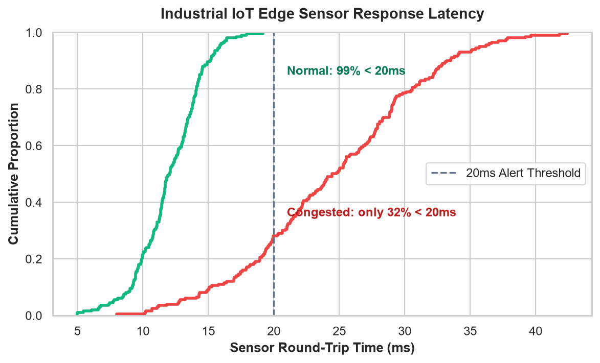
Safety alert standard ke mutabiq sensor heartbeat response strictly 20 milliseconds ke andar aana chahiye:
- Normal Traffic: 99% readings 20ms se kam hain (Safe operation).
- Congested Traffic: Curve severely right side shift ho jaati hai — 68% readings 20ms threshold breach kar deti hain!
Yeh empirical visual evidence plant engineers ko dedicated industrial private 5G network implement karne ka solid justification deti hai.
🚧 17. Common Pitfalls & Debugging Guide
ECDF visualization simple lagti hai lekin beginners aksar statistical aur visual interpretation traps me phans jaate hain:
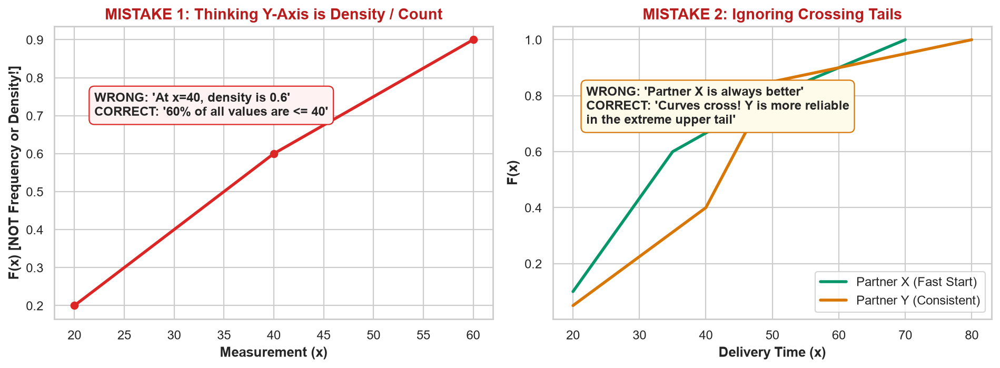
12 Common ECDF Pitfalls & Solutions
| Pitfall / Trap | Kyun Hota Hai? (Root Cause) | Recommended Fix & Code Solution |
|---|---|---|
| 1. Misinterpreting Y-Axis as Density | Users sochte hain ki Y-axis par 0.60 ka matlab hai "40 minutes par density 0.60 hai". Y-axis Cumulative Fraction (≤ x) hoti hai, frequency ya density nahi! | Y-axis labels ko clearly Cumulative Proportion F(x) ya Orders Delivered (%) mark karein:ax.set_ylabel("Cumulative Fraction F(x)") |
| 2. Misreading Curve Direction | Users sochte hain ki jo curve right side hoti hai woh faster hai. Duration / Latency context me LEFT curve faster hoti hai! | Check karein: Left curve lower values par jaldi 1.0 touch karti hai, isliye faster hoti hai. Lower is better for time/cost. |
| 3. Declaring a Winner When Curves Cross | Agar do curves cross kar rahi hon, toh ek service shuru me fast hoti hai lekin tail me slow ho sakti hai. Single winner declare karna misleading hai. | Crossover point identify karein aur specify karein: "Service A has faster median, but Service B has higher 95th percentile SLA reliability." |
| 4. Confusing Percent vs. Proportion | stat="proportion" me scale 0.0 to 1.0 hota hai; stat="percent" me 0% to 100% hota hai. Dono ko mix karne se labels wrong ho jaate hain. |
Explicit units use karein: Percentage ke liye Y-axis par % symbol aur proportion ke liye [0.0 - 1.0]. |
| 5. Forgetting that ECDF Shows ≤ x, Not < x | Discrete data me exact values par ECDF step jump point ko include karta hai (P(X ≤ x)). Strict inequality (<) expect karna count mismatch karta hai. | Mathematical definition yaad rakhein: F(x) includes all observations equal to x. |
| 6. Comparing Unequal Units | Ek group minutes me ho aur doosra seconds ya hours me ho, unhe bina normalize kiye same plot me pass kar dena. | Hamesha unit check karein: df["time_mins"] = df["time_secs"] / 60. |
| 7. Small Sample Over-Interpretation | N=10 observations par broad population claims karna. Chhote samples me steps bade (10%) hote hain jisse sample variance high rehti hai. | Sample size (N) ko title ya legend me disclose karein: title="Section A (N=100)". |
| 8. Forgetting CCDF for Exceedance Analysis | "Kitne orders 45 mins se zyada late hue?" nikalne ke liye standard ECDF se mental subtraction karna padta hai (100 - F(x)). | Directly complementary=True use karein taaki Y-axis directly late/breached proportion dikhaye:sns.ecdfplot(df, x="time", complementary=True) |
| 9. Overcrowding Multi-Hue Plots | 6 se zyada groups ko single ECDF me daal dene se line tangle ban jata hai. | Groups ko 4–5 tak limit karein ya FacetGrid subplots use karein. |
| 10. Assuming ECDF Establishes Causation | Section A ka ECDF Section B se left hone par maan lena ki faculty A better hai, jabki student baseline admission score different ho sakta hai. | ECDF distribution shape show karta hai, causal proof nahi. Confounding variables check karein. |
| 11. Missing / NaN Values Breaking Calculations | Pandas column me null values hone se observation count N distort ho jata hai. | Plot karne se pehle .dropna() karein:sns.ecdfplot(df["latency"].dropna()) |
| 12. Extreme Outliers Compressing Visible Steps | Latency me ek extreme 10,000ms outlier hone se 99% data pehle 2% horizontal space me cram ho jata hai. | log_scale=True use karein ya 99th percentile par horizontal axis zoom karein:sns.ecdfplot(df, x="latency", log_scale=True) |
Debugging Exercises: 2 Buggy Code Snippets & Fixes
Buggy Code:
# Bug: Partner A logged in minutes, Partner B logged in seconds!
sns.ecdfplot(data=df_a, x="delivery_mins", label="Partner A")
sns.ecdfplot(data=df_b, x="delivery_secs", label="Partner B") # Disaster: 2400s plotted against 40m!Correction:
# Fix: Normalize both datasets to minutes before plotting
df_b["delivery_mins"] = df_b["delivery_secs"] / 60.0
sns.ecdfplot(data=df_a, x="delivery_mins", label="Partner A")
sns.ecdfplot(data=df_b, x="delivery_mins", label="Partner B")Buggy Code:
# Bug: Passing grouped dataframe without hue combines all sections into one single curve!
sns.ecdfplot(data=df_sections, x="completion_time")Correction:
# Fix: Explicitly specify hue="section" to generate distinct colored curves per group
sns.ecdfplot(data=df_sections, x="completion_time", hue="section")📋 18. Quick Reference: ECDF Cheat Sheet & Dashboard
Aapke daily workflow ke liye yeh comprehensive cheat sheet sabhi common distribution evaluation goals ko summarize karti hai:
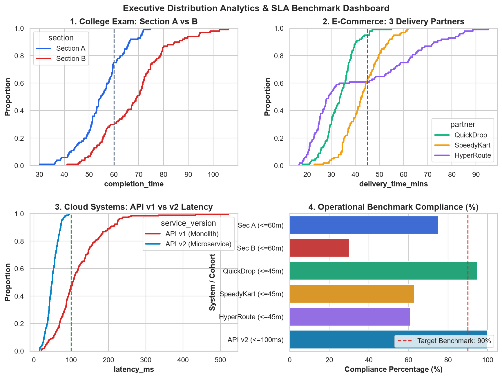
| Analytical Goal | Function / Parameter | Key Options | Use-Case Example | Quality Assertion |
|---|---|---|---|---|
| Basic Cumulative Curve | sns.ecdfplot() |
x="col", stat="proportion" |
Measure student exam completion times | Curve monotonically ascends from 0.0 to 1.0 |
| Percentage Scaling | sns.ecdfplot() |
stat="percent" |
Show client-friendly 0% to 100% metrics | Y-axis displays clean percentage ticks |
| Multi-Group Comparison | sns.ecdfplot() |
hue="group", palette="Set2" |
Compare delivery partners QuickDrop vs SpeedyKart | Non-overlapping curves with distinct colors |
| Breach / Exceedance Audit | sns.ecdfplot() |
complementary=True |
Measure fraction of API requests exceeding 200ms | Curve starts at 1.0 and descends to 0.0 |
| Threshold Annotation | ax.axvline() + ax.axhline() |
linestyle="--", color="#dc2626" |
Annotate 45-min SLA deadline on delivery plot | Exact visual intersection at target percentage |
| Heavy Tail Normalization | sns.ecdfplot() |
log_scale=True |
Microservice latency with extreme 10,000ms spikes | Spreads tightly packed lower percentiles |
Production ECDF Benchmark Pipeline Function
Aap is reusable Python function ko kisi bhi continuous numerical column par call karke automated SLA threshold evaluation aur median reference lines generate kar sakte hain:
import numpy as np
import pandas as pd
import matplotlib.pyplot as plt
import seaborn as sns
def plot_ecdf_benchmark(df, column, hue=None, threshold=None, title=None):
"""
Generates an executive-ready ECDF plot with automated median reference lines,
optional threshold compliance check, and clean Seaborn styling.
"""
sns.set_theme(style="whitegrid")
fig, ax = plt.subplots(figsize=(8.5, 4.5), dpi=140)
sns.ecdfplot(data=df, x=column, hue=hue, stat="percent", linewidth=2.3, ax=ax)
# Add Median reference line
ax.axhline(50, color="#64748b", linestyle=":", alpha=0.8, label="50th Percentile (Median)")
if threshold is not None:
ax.axvline(threshold, color="#dc2626", linestyle="--", linewidth=1.8, label=f"Threshold: {threshold}")
if hue is None:
compliance = (df[column] <= threshold).mean() * 100
ax.axhline(compliance, color="#10b981", linestyle="--", label=f"Compliance: {compliance:.1f}%")
plot_title = title if title else f"ECDF Distribution Benchmark: {column}"
ax.set_title(plot_title, fontsize=13, fontweight="bold")
ax.set_ylabel("Cumulative Percentage (%)")
ax.legend(loc="best")
plt.tight_layout()
return fig, ax💪 19. Practice Questions & Capstone Mini-Project
Neeche diye gaye 21 conceptual questions, analytical challenges, MCQs, aur Capstone project ko solve karke apna ECDF concepts test karein. Har question ka solution dekhne ke liye accordion par click karein:
Q01: ECDF ka full form kya hai aur yeh Histogram se kaise alag hai?
Answer:
- Full Form: Empirical Cumulative Distribution Function.
- Difference from Histogram: Histogram data ko arbitrary bins me divide karta hai jisse plot ka shape bin count par heavily depend karta hai. ECDF me ZERO parameters hote hain; yeh dataset ke har single observation ko directly cumulative step function ke roop me plot karta hai bina kisi binning ya smoothing distortion ke.
Q02: ECDF plot me vertical step jump ka size kya hota hai?
Answer:
Har unique observation par ECDF curve vertically 1 / N se jump karti hai (jahan N total sample size hai). Agar N = 10 ho toh har jump 1/10 = 0.10 (10%) ka hota hai. Agar N = 500 ho toh har jump 1/500 = 0.002 (0.2%) ka hota hai, jisse curve visually smooth dikhne lagti hai.
Q03: ECDF plot me X-axis aur Y-axis kya represent karte hain?
Answer:
- X-axis: Actual measured variable x (jaise Exam Completion Time in minutes, Order Delivery Time in mins, ya Server Latency in ms).
- Y-axis: Cumulative Fraction F(x) = P(X ≤ x), jo measure karta hai ki dataset ke kitne proportion (0.0 to 1.0) ya percentage (0% to 100%) observations x ke barabar ya us se chote hain.
Q04: First-Order Stochastic Dominance ka visual matlab kya hota hai?
Answer:
Jab Group A ki ECDF curve Group B ki curve ke strictly LEFT aur ABOVE hoti hai (yaani har value x par FA(x) ≥ FB(x)), toh iska matlab hai ki Group A consistently lower / faster values generate karta hai. Example: Section A ke students consistently Section B se jaldi paper submit karte hain.
Q05: Do ECDF curves aapas me cross kyun karti hain (The Crossover Phenomenon)?
Answer:
Jab do distributions me trade-off hota hai! Example: Partner X bottom 50% orders me Partner Y se faster hota hai (faster median), lekin Partner X ke paas ek heavy tail hoti hai jisme kuch orders dangerously late hote hain. Resultantly, lower region me Partner X ki curve left hoti hai, lekin higher region me Partner Y ki curve left ho jaati hai.
Q06: Complementary CDF (complementary=True) kab use kiya jata hai?
Answer:
Jab hume SLA Breach ya Exceedance Probability dekhni ho: CCDF(x) = 1 - F(x) = P(X > x). Example: "Kitne percent API requests ne 200ms se ZYADA time lagaya?" Standard ECDF se subtraction karne ke bajaye CCDF directly late/breached percentage show karta hai.
Q07: ECDF curve ka shape kabhi neeche gir sakta hai? Explain karein.
Answer:
Nahi, kabhi nahi! ECDF ek Monotonically Non-Decreasing Function hota hai. Jaise-jaise x increase hota hai, cumulative count ya toh constant rehti hai (horizontal flat segment) ya jump karti hai (vertical step). Curve kabhi bhi downward slope nahi le sakti!
Q08: stat="percent" aur stat="proportion" me kya antar hai?
Answer:
stat="proportion": Y-axis scale0.0 se 1.0hota hai (relative probability).stat="percent": Y-axis scale0% se 100%hota hai (multiplied by 100, presentation-friendly).
Q09: ECDF se Median (50th percentile) kaise read karte hain?
Answer:
Y-axis par 0.50 (50%) mark par horizontal line draw karein. Jahan yeh line ECDF step curve ko intersect kare, wahan se vertically downward X-axis par drop karein. X-axis par milne wali value exact empirical median hoti hai!
Q10: KDE ke muqable ECDF small sample sizes par kyun reliable rehta hai?
Answer:
KDE chote samples (N < 20) par smoothing bandwidth ki wajah se false bumps ya tails hallucinate kar sakta hai. ECDF zero assumptions banata hai aur exact raw sample steps display karta hai, jo mathematically transparent hota hai.
Q11: Practical Coding Challenge — Delivery Times par 45-Min SLA ECDF banayein.
fig, ax = plt.subplots(figsize=(8, 4))
sns.ecdfplot(data=df_delivery, x="delivery_time_mins", stat="percent", ax=ax)
ax.axvline(45, color="red", linestyle="--", label="45-Min SLA")
ax.set_title("Delivery SLA Compliance ECDF", fontweight="bold")
ax.legend()
plt.show()Q12: Practical Coding Challenge — Complementary CCDF se Latency Violations plot karein.
fig, ax = plt.subplots(figsize=(8, 4))
sns.ecdfplot(data=df_latency, x="latency_ms", hue="service_version", complementary=True, stat="percent", ax=ax)
ax.axvline(100, color="green", linestyle="--", label="100ms Budget")
ax.set_title("API Latency Violation Rate (CCDF)", fontweight="bold")
ax.legend()
plt.show()Q13: Practical Coding Challenge — Median aur 90th percentile reference lines add karein.
p50 = np.percentile(df_sections["completion_time"], 50)
p90 = np.percentile(df_sections["completion_time"], 90)
fig, ax = plt.subplots(figsize=(8, 4))
sns.ecdfplot(data=df_sections, x="completion_time", stat="percent", ax=ax)
ax.axhline(50, color="blue", linestyle=":", label=f"p50: {p50:.1f}m")
ax.axhline(90, color="purple", linestyle=":", label=f"p90: {p90:.1f}m")
ax.legend()
plt.show()Q14: Multiple Choice — Seaborn me ECDF plot karne ke liye kaunsa dedicated function use hota hai?
Question: Which Seaborn function creates an empirical cumulative distribution plot?
- A)
sns.cumplot() - B)
sns.ecdfplot()— Correct! - C)
sns.stepdistribution() - D)
sns.cdfplot()
Explanation: sns.ecdfplot() Seaborn ka standard function hai jo empirical CDF plot karta hai.
Q15: Multiple Choice — ECDF me Y-axis kis value range me strictly bounded hoti hai?
Question: What are the strict mathematical bounds of the Y-axis in an ECDF when stat="proportion"?
- A)
[-1.0, 1.0] - B)
[0.0, infinity) - C)
[0.0, 1.0]— Correct! - D) Depends on bin count
Explanation: Cumulative proportion hamesha 0.0 (0 observations) se 1.0 (all observations) ke beech strictly bounded hoti hai.
Q16: Multiple Choice — Kis parameter se ECDF P(X > x) calculate karta hai?
Question: Which parameter in sns.ecdfplot() plots the survival / exceedance function 1 - F(x)?
- A)
reverse=True - B)
invert=True - C)
complementary=True— Correct! - D)
descending=True
Explanation: complementary=True complementary CDF (1 - F(x)) plot karta hai.
Q17: Multiple Choice — Agar Delivery Time ke graph me Service X ka curve Service Y ke LEFT me ho, toh iska kya matlab hai?
Question: In a delivery duration ECDF, what does it mean if Service X's curve is strictly to the left of Service Y?
- A) Service X is slower than Service Y.
- B) Service X consistently delivers faster than Service Y. — Correct!
- C) Both services have identical variance.
- D) Service X has more missing data.
Explanation: Left curve ka matlab hai ki har time threshold par Service X ne higher percentage of orders deliver kar diye the, yaani Service X faster hai.
Q18: Multiple Choice — ECDF me bina kisi parameter ke kitne data points directly represent hote hain?
Question: What percentage of sample data points are directly preserved and represented in an ECDF?
- A) Only 50% (the interquartile range)
- B) 95% (excluding outliers)
- C) 100% of observations — Correct!
- D) Depends on Sturges rule
Explanation: ECDF me koi binning ya smoothing data drop nahi hota; 100% observations step transitions ke roop me directly visual rehte hain.
Q19: Debugging Exercise — Comparing Incompatible Units (Minutes vs. Seconds)
Buggy Code:
# Bug: QuickDrop is in minutes, RuralRoute is recorded in seconds!
sns.ecdfplot(data=df_quick, x="time_mins", label="QuickDrop")
sns.ecdfplot(data=df_rural, x="time_secs", label="RuralRoute")Problem: RuralRoute 1800 to 3600 seconds scale par plot hoga jabki QuickDrop 30 to 60 mins par, jisse plot completely distorted ho jayega.
Fixed Code:
df_rural["time_mins"] = df_rural["time_secs"] / 60.0
sns.ecdfplot(data=df_quick, x="time_mins", label="QuickDrop")
sns.ecdfplot(data=df_rural, x="time_mins", label="RuralRoute")Q20: Debugging Exercise — Forgetting hue Semantic in Multi-Group Data
Buggy Code:
# Bug: Dataframe contains multiple partners, but hue is omitted!
sns.ecdfplot(data=df_delivery, x="delivery_time_mins")Problem: All 3 partners combine into one single mixed distribution curve.
Fixed Code:
sns.ecdfplot(data=df_delivery, x="delivery_time_mins", hue="partner")Q21 Capstone Project: Multi-Partner Delivery SLA Audit
Mission Objectives:
- Load
ecommerce_deliveries.csv. - Compute median delivery times and 45-minute SLA compliance rates for all 3 partners.
- Plot a dual-panel comparative visualization:
- Left Panel: Regular ECDF with 45-minute SLA target line.
- Right Panel: Complementary CCDF highlighting late/breached order rates.
- Print executive audit summary.
import pandas as pd
import matplotlib.pyplot as plt
import seaborn as sns
# 1. Load Data
df_deliv = pd.read_csv("scratch/seaborn_topic6_data/ecommerce_deliveries.csv")
# 2. Setup Figure
sns.set_theme(style="whitegrid")
fig, axes = plt.subplots(1, 2, figsize=(13, 4.8), dpi=140)
palette = {"QuickDrop": "#10b981", "SpeedyKart": "#f59e0b", "HyperRoute": "#ec4899"}
# Panel 1: Regular ECDF (On-Time Compliance)
sns.ecdfplot(data=df_deliv, x="delivery_time_mins", hue="partner", stat="percent", palette=palette, linewidth=2.3, ax=axes[0])
axes[0].axvline(45, color="#dc2626", linestyle="--", linewidth=2, label="45-Min SLA")
axes[0].axhline(90, color="#64748b", linestyle=":", label="90% Target")
axes[0].set_title("On-Time Delivery Compliance (ECDF)", fontweight="bold")
axes[0].set_ylabel("Delivered Orders (%)")
axes[0].legend(loc="upper left")
# Panel 2: Complementary CCDF (Late Order Risk)
sns.ecdfplot(data=df_deliv, x="delivery_time_mins", hue="partner", complementary=True, stat="percent", palette=palette, linewidth=2.3, ax=axes[1])
axes[1].axvline(45, color="#dc2626", linestyle="--", linewidth=2, label="45-Min SLA")
axes[1].set_title("Late Delivery Breach Risk (CCDF)", fontweight="bold")
axes[1].set_ylabel("Breached Orders (%)")
axes[1].legend(loc="upper right")
plt.tight_layout()
plt.savefig("scratch/capstone_delivery_benchmark.png", dpi=160)
plt.show()
# 3. Print Executive Audit
print("=== ECDF CAPSTONE DELIVERY AUDIT ===")
for p in ["QuickDrop", "SpeedyKart", "HyperRoute"]:
sub = df_deliv[df_deliv["partner"] == p]["delivery_time_mins"]
med = sub.median()
sla = (sub <= 45).mean() * 100
print(f"{p:10s} | Median: {med:4.1f}m | 45-Min SLA: {sla:5.1f}% | {'PASS' if sla>=90 else 'FAIL'}")🏁 20. Summary & What's Next
Congratulations! Aapne Seaborn distribution visualization ke sabse objective, parameter-free aur actionable tool — Empirical Cumulative Distribution Functions (sns.ecdfplot) — par complete practical mastery achieve kar li hai.
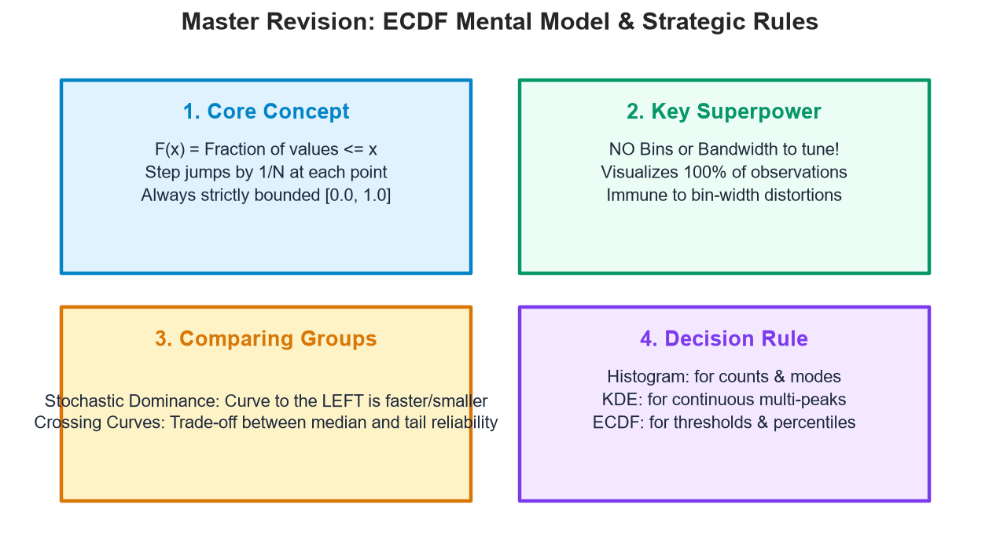
6 Golden Rules of ECDF Mastery
| Rule # | Core Principle | Actionable Rule of Thumb |
|---|---|---|
| 1 | Parameter-Free Truth | Jab bins ya bandwidth tuning se avoid karna ho, ECDF use karein — 100% observations unaltered rehte hain. |
| 2 | Threshold Decision Power | "Kitne % orders SLA meet kar rahe hain?" poochhne par hamesha ECDF use karein, averages par rely na karein. |
| 3 | Read Direction Carefully | Duration/Cost me LEFT curve faster/better hoti hai; Scores/Income me RIGHT curve higher/better hoti hai. |
| 4 | Watch for Crossovers | Agar curves cross kar rahi hon, toh faster median hone ke bawajood long-tail risk ho sakta hai. |
| 5 | CCDF for Breach Audits | Worst-case late deliveries aur SLA violations directly measure karne ke liye complementary=True use karein. |
| 6 | Clean Multi-Group Comparisons | 3–5 groups ko bina bar occlusion ke compare karne ke liye ECDF histogram se far superior hota hai. |
Topic 7 me hum explore karenge Box Plots (sns.boxplot) — jahan Five-Number Summary (Min, Q1, Median, Q3, Max), Interquartile Range (IQR), Whiskers, aur statistical Outliers ko compact, category-wise visual format me analyze karna seekhenge!